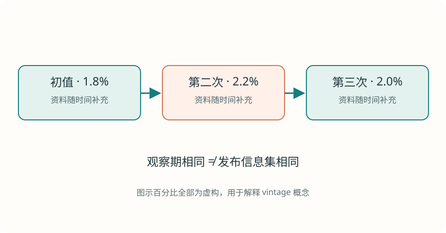
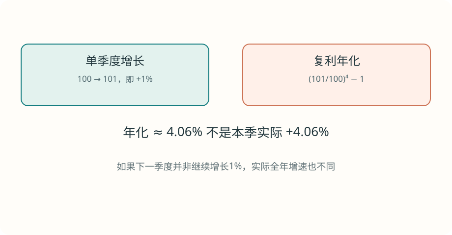
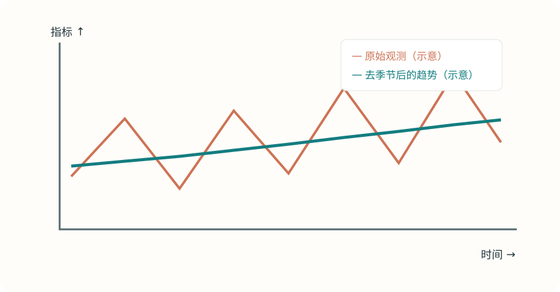
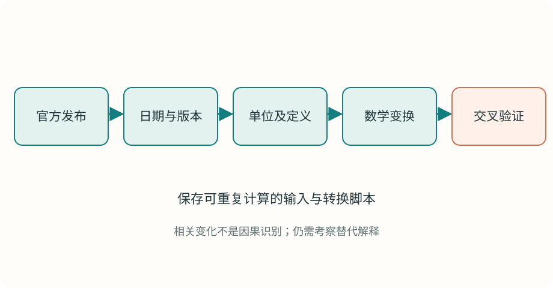

宏观数据解读实战
同样一个 GDP 数字，为什么今天看到的和一年前报道的不一样？理解季调、年化、初值修订和数据版本。
数据发布后的第一次数字，不等于最终历史事实
宏观经济数据的观察值通常不是一次测量后永远不变。初步估算会利用当时可得的样本与行政数据，后续统计随着源数据补充和方法修订调整。美国 BEA 以 GDP 为例，会发布 advance、second、third 三个阶段的季度估计，后续还可能进行年度或综合修订。分析「当时市场为何作出判断」，不能事后拿最终数据去冒充当时决策者已知的信息。BEA 发布说明。

月度同比、季度环比和季度年化不能混读
同比增长通常比较本期与上年对应期；环比增长比较本期与上一期；环比年化将本期环比速度假设连续复利延续一整年。美国季度 GDP 新闻中常用「按季节调整后年化率」（SAAR）公布增长，不能直接将其读作该季度实际上涨同样百分比。
从季度环比计算年化增长
假定四个季度保持相同环比变化，这是换算方式，不是对未来的预测。

季节调整要消除重复模式，不是把曲线修得好看
学校开学、春节、天气、节假日和企业工作日会让月份数据出现有规律的季节波动。例如每年年末零售交易上升，并不必然说明经济突然加速。季节调整利用统计模型估计可重复的周期成分，以便观察环比变化；调整值仍受模型和样本修订影响，季调后的单月波动也不能自动归因于政策。

如采用简化乘法模型「原始观察 = 趋势 × 季节系数 × 不规则项」，从原始值除以估计的季节系数只是教学近似。BLS 的实务还考虑交易日、移动节假日、异常值、模型选择及历史修订。BLS 方法手册列出了相关注意事项。
先记录元数据，再对指标做数学运算
| 检查项 | 必须记录的字段 | 若忽略会怎样 |
|---|---|---|
| 统计对象 | 国家、行业、人口范围、季调/非季调 | 把不同总体拼接成时间序列 |
| 观察窗口 | 月/季/年、期末余额或期间流量 | 混淆存量与流量 |
| 价格口径 | 名义、实际、平减指数与基期 | 把通胀当产出增长 |
| 发布日期 | 观察期、发布日期、数据版本 | 事后使用未来信息回测 |
| 单位与变换 | 指数、百分比、百分点、年化或累计同比 | 「1%」和「1 个百分点」混淆 |
| 制度修订 | 统计定义或范围是否修改 | 把断点当真实经济冲击 |
美国数据可从 FRED 查找长期序列，用 ALFRED 核查旧版本；中国经济数据应以对应发布机构和数据表的原始时间标签为准。包括 PMI 在内的扩散指数也不等于产量增速：50 上下通常表示报告扩张的净平衡阈值，不能由 PMI 51 推出实际 GDP 增长 1%。
给宏观新闻做一个可复核的四步检查
第一步：取得官方原始表，并保存来源网址和截取日期；第二步：还原统计定义、基准与修订历史；第三步：用手算检查一条关键增速，明确同比/环比/年化；第四步：用就业、产出、价格和融资等独立指标交叉检查，不把同时变化直接当作因果。

来源与证据
机构资料用于核对概念、统计方法与制度；本篇图表和实验数字均为明确标注的构造示例，不代表当前市场实际数据。
- BEA：GDP初值、第二次、第三次估计和修订 · advance/second/third estimates
- BEA：季度年化增速说明 · annualized changes
- ALFRED：实时数据各版本 · vintage data
- BLS：季节调整的方法与局限 · seasonal patterns and filters